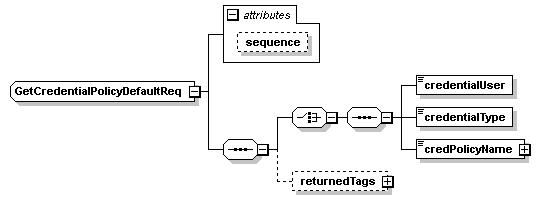
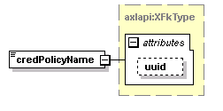
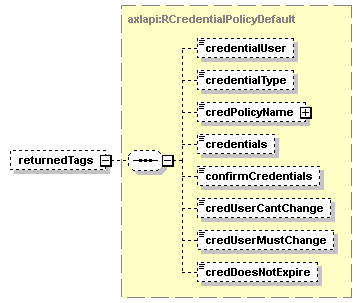

| diagram |  | ||||||||||||
| namespace | http://www.cisco.com/AXL/API/10.5 | ||||||||||||
| children | credentialUser credentialType credPolicyName returnedTags | ||||||||||||
| used by |
|
||||||||||||
| attributes |
|
||||||||||||
| source | <xsd:complexType name="GetCredentialPolicyDefaultReq"> <xsd:sequence> <xsd:choice> <xsd:sequence> <xsd:element name="credentialUser" type="axlapi:XCredentialUser" nillable="false" minOccurs="1" maxOccurs="1"/> <xsd:element name="credentialType" type="axlapi:XCredential" nillable="false" minOccurs="1" maxOccurs="1"/> <xsd:element name="credPolicyName" type="axlapi:XFkType" nillable="false" minOccurs="1" maxOccurs="1"/> </xsd:sequence> </xsd:choice> <xsd:element name="returnedTags" type="axlapi:RCredentialPolicyDefault" minOccurs="0"/> </xsd:sequence> <xsd:attribute name="sequence" type="xsd:unsignedLong" use="optional"/> </xsd:complexType> |
| type | xsd:unsignedLong | ||
| properties |
|
||
| source | <xsd:attribute name="sequence" type="xsd:unsignedLong" use="optional"/> |
| diagram | |||||
| type | axlapi:XCredentialUser | ||||
| properties |
|
||||
| source | <xsd:element name="credentialUser" type="axlapi:XCredentialUser" nillable="false" minOccurs="1" maxOccurs="1"/> |
| diagram | |||||
| type | axlapi:XCredential | ||||
| properties |
|
||||
| source | <xsd:element name="credentialType" type="axlapi:XCredential" nillable="false" minOccurs="1" maxOccurs="1"/> |
| diagram |  | ||||||||||||
| type | axlapi:XFkType | ||||||||||||
| properties |
|
||||||||||||
| attributes |
|
||||||||||||
| source | <xsd:element name="credPolicyName" type="axlapi:XFkType" nillable="false" minOccurs="1" maxOccurs="1"/> |
| diagram |  | ||||||
| type | axlapi:RCredentialPolicyDefault | ||||||
| properties |
|
||||||
| children | credentialUser credentialType credPolicyName credentials confirmCredentials credUserCantChange credUserMustChange credDoesNotExpire | ||||||
| source | <xsd:element name="returnedTags" type="axlapi:RCredentialPolicyDefault" minOccurs="0"/> |